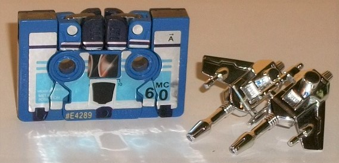
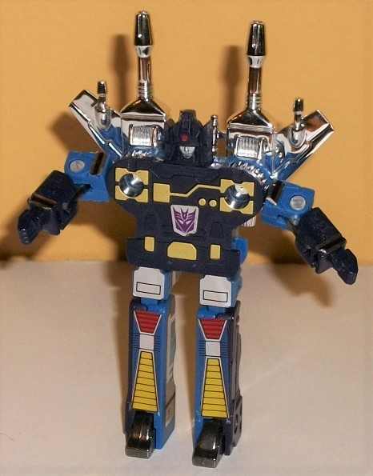
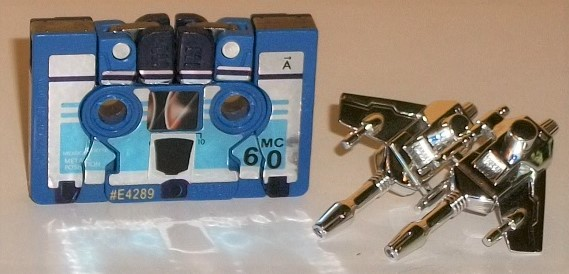
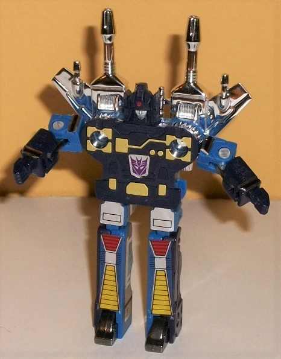
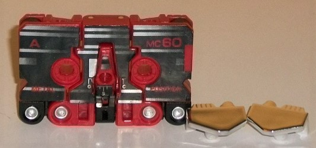
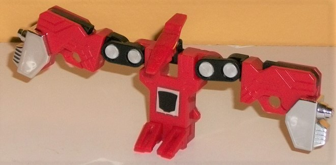
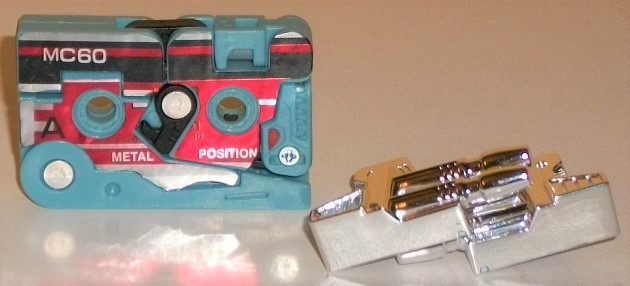
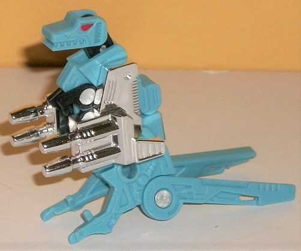
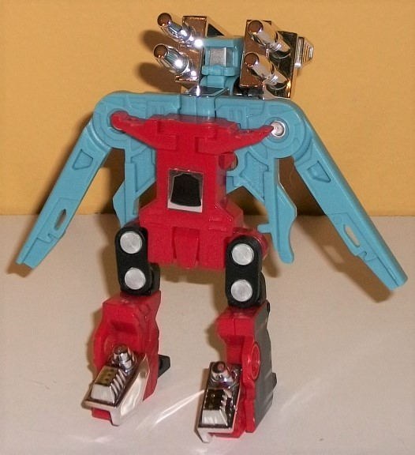

 
Allegiance : Decepticon
Difficulty of Transformation : Very Easy
Color Scheme : Dark purplish blue, moderately dark powder blue, chrome silver, and some silver and metallic gold
Individual Rating : 7.3
Set Price
: ~$35 (U.S.)
Overall Rating
: 5.1
 Decepticon
Frenzy
Decepticon
Frenzy


Allegiance
: Decepticon
Difficulty of Transformation
: Very
Easy
Color Scheme
: Dark purplish blue,
moderately dark powder blue, chrome silver, and some silver and metallic
gold
Individual Rating
: 7.3
Frenzy's alternate mode
is, of course, a cassette tape. Given his color scheme, it looks like this
pack goes by the FIBRIR mentality (Frenzy is Blue, Rumble is Red), as Frenzy
is mostly a fairly dark powder blue-- at least on the front of this mode.
There's only a little of dark purplish blue used on the top and bottom
when looked at from the front. This is a remarkably solid cassette mode,
with the only "robot extras" being the lower arms that are just a TITCH
obvious on the top. Sure there's some basic cracks as there would have
to be for a tape that becomes a robot, but they're not overly egregious
or anything. The stickers on the front are applied pretty nicely over the
various parts, with a solid dark blue-purple stripe on the top and some
lighter blue, thicker stripes near the bottom. There's also some basic
cassette tape font on it, such as "MC 60", side "A", etc. There is an allegiance
symbol plopped right in the middle of this mode, on top of some of the
cassette sticker details, oddly enough. On the flipside, color-wise it's
another story-- Frenzy's almost all dark purple-blue back there, with again,
just a bit of powder blue on the top and bottom. The back side definitely
wasn't made to be mostly the back of a cassette (as is the case with most
tape-bots), with all robotic details back there in the center portions,
including some pretty nifty circuitry-like details around the holes and
some minor gold details near the bottom on what becomes Frenzy's waist.
Near the sides of the back, though, there are still some cassette-esque
details, like small "pin holes" on the corners and the outlines of a square
that isn't completed in the middle because of the aforementioned robotic
details. Frenzy's "normal" Decepticon symbol is smack in the middle of
the back side.
Frenzy's transformation
is pretty simple-- rotate the sides down and forward to become the legs,
slide out the feet, and then rotate out and down the top middle sections
to become the arms, and the head auto-pops up when you do that. The proportions
have a few oddities in this mode, though they're relatively minor for an
early G1 toy-- especially one that forms a cassette. Yes, he is rather
2-D, having almost no length if you look at him from the side, but that's
rather inescapable, especially given the transformation "technology" of
the time. The chest looks pretty good and proportional with those nice
gold tech details on it, with the holes of the tape making good "pecs".
The arms are a bit on the small side, though-- it's especially weird there's
no real shoulders, they just come right out of the sides of the chest.
At least the hands are actually molded parts and not just molded details
onto some part of the tape mode, though. The legs are just a titch long
compared to the body, but are largely good. (Yes, they're stiff-looking,
but this is par for the course for a G1 toy.) Frenzy's headsculpt is a
bit weird, as the actual face is rather small compared to the rest of the
head-- there's a very small "normal" nose/mouth painted silver there, with
a larger horizontal unpainted visor. The forehead-- with a small dot of
red in the center and a vent-- and the side antennae with a wide neck are
pretty big in comparison. It's not a great sculpt. The color scheme is
more nicely balanced between the powder blue and the purple-blue in this
mode, wth some basic rectangular detail stickers on the upper legs and
some vent-like details on the lower legs. Frenzy comes with two nifty chrome
wing-guns which can be mounted on his back in this mode-- and, unfortunately,
can't be convincingly stored in cassette mode. For articulation in this
mode, Frenzy can move at the shoulders (at two points), elbows, side-to-side
at the hips, and backwards at the knees-- actually pretty decent movement
for a small G1 toy.
 Gurafi
Gurafi


Allegiance
: Autobot
Difficulty of Transformation
: Very
Easy
Color Scheme
: Red, black, and some
chrome silver and yellow
Individual Rating
: 6.9
Gurafi's alternate mode
is also a cassette-- Autobot this time. This mode is pretty solid, particularly
given that you have to have obvious "lines" throughout the toy for it to
transform. The lines are symmetrical at least, and the only really obvious
ones in terms of breaking up the stickers on the front of this mode are
those that make up the bottom of the beast head in the middle of the toy.
The black stickers that make up the front have some nice silver "sheen"
lines on them, along with the usual details you'd expect to find on the
front of a cassette tape. There's also some wide silver pins on the bottom
of this mode on both sides, but again, this is expected given the size
of the toy. The actual mold detailing on the front is pretty minimal given
all the stickers, but on the back end, there's some neat circuitry lines
and aerodymanic lines molded in-- it's a nice addition, though of course
they don't fit in this mode. On the back side is also where Gurafi's allegiance
rub sticker is.
Gurafi transforms somewhat
similarly to
G1 Laserbeak
, in that the feet
are formed from small slits folded down, the head from the middle of the
cassette mode, and the wings flap out from the sides and make up the majority
of his mass. There are some important differences, however. For one, the
very ends of his wings fold out another time from the center portions of
the cassette, making them a bit bulkier and less angular than Laserbeak's.
Gurafi's feet and head are articulated/molded in such a way where he can
stand up straight up in this mode, compared to Laserbeak who is forced
to be in a "flight" stance. Gurafi can also take a flight stance, but his
feet are pointing downwards if you do so. (The feet are also made from
the top of the cassette mode, a minor difference.) Anyways, the end result
is fairly decent for a cassette-beast. Sure, I can nitpick some stuff--
of course he's rather 2-D, and his wings should be larger and his body
a bit smaller-- but overall, for a toy that forms a block, and given the
technology of the time, he's pretty decent. Since nearly everything in
his cassete mode is visible here, there isn't much new detail-wise, though
the pterodactyl head has some skinny tech details on it, complete with
slitted, yellow-painted eyes. The red is more apparent in this mode, since
all the black stickers are on his back in this mode, though some black
still shows through on his upper arms and on the sides of his wings, making
his basic color scheme a bit more balanced in this mode. It's rather impressive
he has the articulation he does-- two points at the neck, two points up-and-down
on each wing and rotation where the black pinned portion meets the red
lower wing, and rotation to the sides for his feet. Gurafi does have two
extra chrome silver "armor" bits with some basic vent/dial detailing on
them, which can be pegged into the ends of his wings. They don't really
add anything to this mode, though, and unfortunately they can't be stored
in cassette mode, which always annoys me.
Gurafi forms the lower
half of Decibel.
 Noizu
Noizu


Allegiance
: Autobot
Difficulty of Transformation
: Very
Easy
Color Scheme
: Pale greenish blue,
chrome silver, and some black and red
Individual Rating
: 4.2
Noizu's cassette alternate
mode is easily the weakest of this 3-pack. The tape details on the front
are broken up pretty badly by the dino parts-- I mean, the t-rex head is
just right THERE on the left side, not even attempting to be hidden. The
tail is also really obvious on the bottom given that it's unstickered,
and the combiner mode head on the top left and t-rex legs in the middle
are also fairly obvious. The stickers do their best to approximate cassette
details-- including black, silver, and red stripes-- and the usual text
is where it needs to be, but it's so unevenly applied it's not really all
that convincing, even ignoring the usual "cracks" in this mode that you'd
expect from a cassette transformer. The back side of this mode has more
mechanical details, including some comprisingly complex piston details
(for a G1 toy) near the bottom, on what becomes part of the t-rex body.
Obviously from the back end it just looks like an oddly curled up t-rex,
with the only "cassette tape" aspects of it being the overall dimensions
and the two holes. The pale greenish blue color is a decent enough shade,
though that's really it for the color scheme. Yeah, there's some small
black pieces and silver/red paint apps on the combined mode/beast mode
eyes, but that's not really enough to add anything significant to the color
scheme. The allegiance rub symbol is on the right side of the cassette
mode, on the side.
Getting Noizu to his
t-rex mode is pretty easy-- fold out the tail, then fold up the body and
the head on top of that, and split the lower body in half. As you'd expect,
the end result is fairly 2-D, as is the case with nearly all the cassettes.
Noizy looks... okay... from the side, but from the front he's... well,
no thicker than his cassette alt mode. The body is a bit oddly shaped in
the back, ending abruptly and not gradually as you'd expect the back of
a t-rex to. The head and tiny arms look alright, and I do like the red
"angry eyes" on the face and the basic geometric teeth details. The lower
body, legs, and tail are very odd. The lower body splits into two around
the mid-point to become the legs-- which makes sense-- but due to this,
the tail splits too, given Noizu two tails. The whole thing just doesn't
seem like it was planned out all that well, I'll be honest. Color-wise,
he's still basically all pale green-blue, though a bit more black is now
visible on the neck. Noizu has two rather large side-mounted dual cannon
attachments, though, which can add quite a bit of chrome silver to this
mode to break things up a bit. They're nice weapons, but they're a bit
TOO big proportionally, basically half the size of his whole body-- those
weapons can actually hide a decent portion of him! They also can't be stored
in alt mode, natch. For articulation in this mode, Noizu can move back-and-forth
at the neck (at two points) and up-and-down at the shoulders and the base
of each of his two tail pieces.
 Decibel
(Combination of Gurafi & Noizu)
Decibel
(Combination of Gurafi & Noizu)

Difficulty of Transformation
: Medium
Individual Rating
: 2.0
For their combined robot
mode, Noizu forms the upper body, arms, and head, while Gurafi forms the
lower body and legs. Well, kinda. The two actually intersect and overlap
on the main body, so it's sorta like both form the main body. Anyways,
this combined form is... interesting. Pretty wonky, actually. And it's
pretty much all Noizu's fault. Gurafi actually is a pretty good half of
the combined mode; the legs are pretty well-proportioned for a G1 toy,
with large feet but not overly big for a Transformer, and chromed bits
that fit over the feet. The exposed pins are still there, but that's honestly
not that big of a deal. The part of the body Gurafi forms looks pretty
good-- from the front it looks rather proportional, even if it's a total
front and rather 2-D. Noizu honestly doesn't contribute one good thing
to this combiner, on the other hand. Halves of his tail form the arms,
which look incredibly awkward and are far too long and skinny-- there aren't
even obvious hands, with some basic angles around two skinny holes being
the only indication hands were even considered for this combined mode.
Obviously, they're also incredibly flat-- even moreso than on other cassettes,
given how they're each only half of the cassette width-- and there's no
real meaningful mold details on the chest and arms to really make it obvious
it's the upper body of a robot. The chest itself pegs into the back of
Gurafi's body, but in an incredibly bad choice, it pegs onto the piece
that becomes Gurafi's head, which means the whole top section is VERY prone
to flopping backwards as Gurafi's head flips out, since it's not strong
enough to hold the whole upper body up. The robot head is rather odd, just
being a very large silver visor with a small circular faceplate-- almost
like they took one of the most robotic of all G1 headsculpts and then made
it "superdeformed". What's worse, the head is actually behind the vertical
plane of the rest of the body of the toy, and the rest of Noizu is even
behind THAT-- basically making it so Decibel is incredibly back-heavy and
nearly impossible to stand up, even when those long heels, and even if
you can get Gurafi's head to hold up the rest of his body. It was SUCH
a bad decision, making the body and legs splay out one direction while
the head and the rest of Noizu pokes far backward in the complete opposite
direction, essentially making the toy look like a capital T from a top
view. I guess on a good note, Noizu's cannons can be pegged in the small
holes on the sides behind Decibel's head-- though of course this makes
him even MORE back-heavy. For articulation in this mode, Decibel can rotate
up-and-down at the shoulders, side-to-side at two points on the hips/knees,
and rotation at the knees.
This cassette 3-pack
was a nice idea, as Noizu and Gurafi were VERY difficult to get--and, sadly,
still are, as a significant portion of this shipment to Hasbro Pulse was
lost at sea, I believe-- some kinda cargo accident, so this 3-pack still
goes for a pretty good price on the aftermarket. I'm not sure why Frenzy
was included other than to up the already iffy price. Still, Frenzy is
a solid cassette mold even by pretty modern standards, and if you don't
have him the pack is worth it if you're into G1 cassettes. Gurafi is still
decent, though Noizu is bad and Decibel is absolutely awful. Overall an
iffy pack, wanted more for the curiosities than the actual engineering,
but definitely some head-scatching decisions were made, both in terms of
some of the molds themselves and the addition of Frenzy.
Reviews by Beastbot